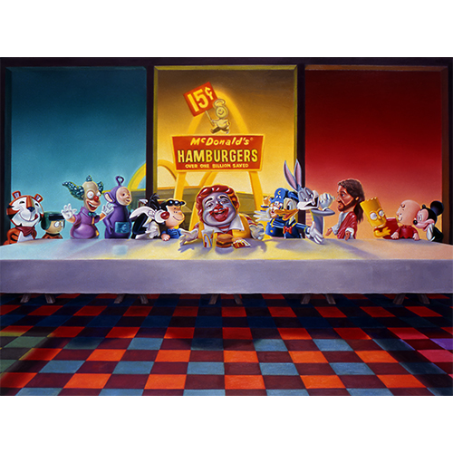
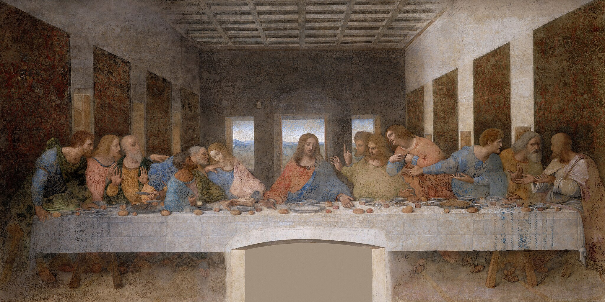
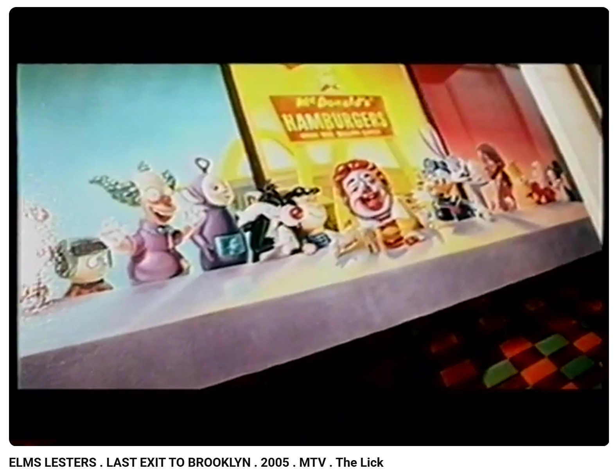
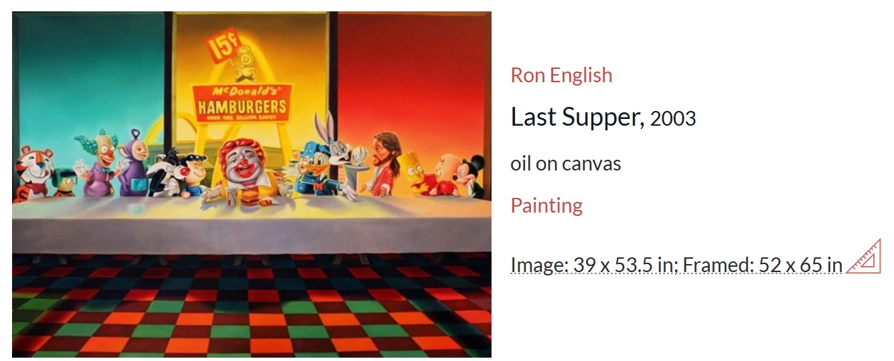
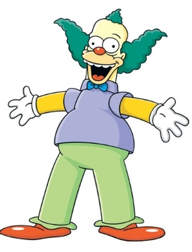
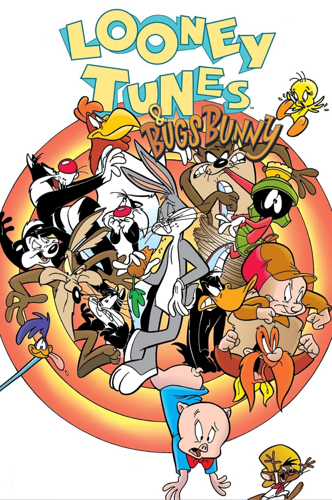
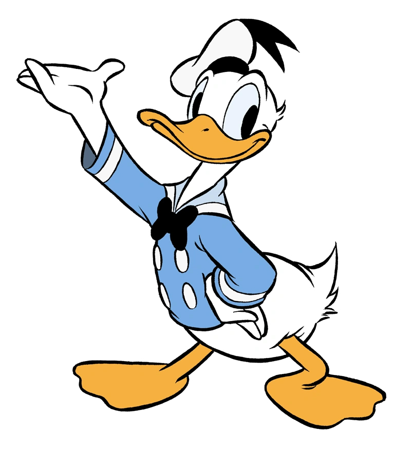
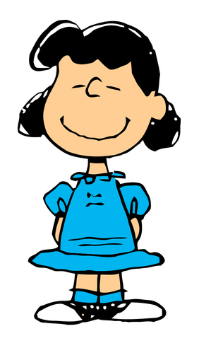
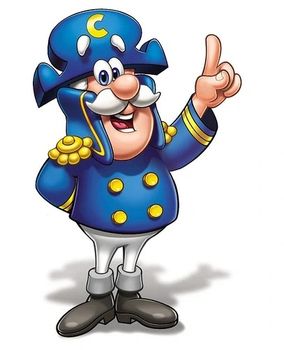

Literature
Ron English, Abject Expressionism: The Art of Ron English (San Francisco: Last Gasp, 2007), p. 17. ISBN 978-0867196894.
Ron English, Original Grin: The Art of Ron English (Paris: Cernunnos, 2019), p. 255. ISBN 978-2374950938.
Notes
This work references Leonardo da Vinci’s The Last Supper.
Prints after this painting appear in Elms Lesters Painting Rooms’ YouTube videos Last Exit to Brooklyn: New York's Counter Culture and Don't Do That.
This composition also appears as one of the images included in The McSupersized Portfolio, a portfolio of four giclée prints featuring images used in the film Super Size Me.
This work appears on MutualArt’s artwork page as Last Supper.
The composition incorporates multiple pop-culture and advertising character references, including Kyle Broflovski from South Park, Krusty the Clown from The Simpsons, several Warner Bros. / Looney Tunes characters, Disney’s Donald Duck, Lucy van Pelt from Charles M. Schulz’s Peanuts, Ronald McDonald, the children’s television series Teletubbies, Tony the Tiger, and Cap’n Crunch.
Ancillary Documentation
The following materials document visual source material, related print appearances, portfolio reproduction, and image-bearing online circulation.












Selected Online Circulation
Selected examples of the work’s online circulation, reproduction, or discussion. This list is not exhaustive; it is intended to document representative appearances of the image beyond formal exhibition and publication records.